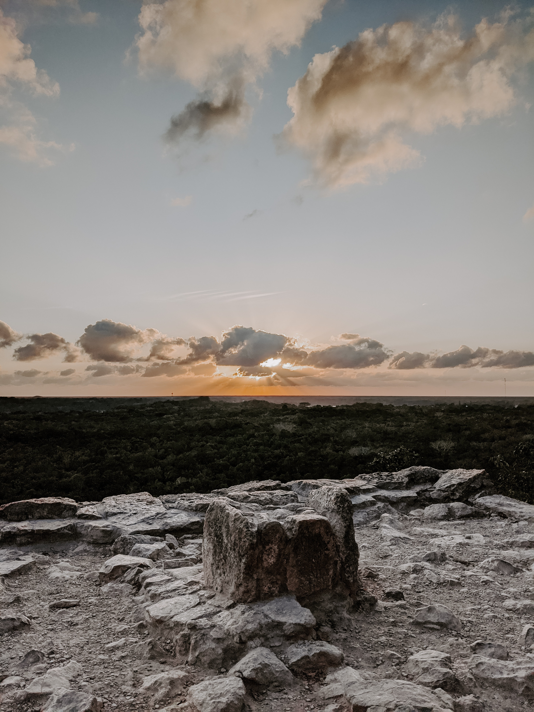

6. The Mission - Part 2
Jesus of Nazareth, was he really the son of god or maybe just an alien among us. Could patterns in British fields be attempts of communications of unknown beings? Will 13 skulls reveal the answer about life, the universe and everything?
Our host Fredrik continues our mission to discover what is genuine, fake, and somewhere in between. We will venture through fields of wheat, ancient pyramids and gleaming crystals to find the conclusion to Ancient Aliens episode 3.
Sources, resources and further reading suggestions
Christenson A, Popol Vuh: literal translation
Freidel, David A., Schele, Linda & Parker, Joy (1993). Maya cosmos: three thousand years on the shaman's path. 1. ed. New York: W. Morrow
Popol vuh: the Mayan book of the dawn of life. Rev. ed. (2017). eBookIt.com
Waynaboozhoo and the Great Flood - Ojibwe
Levengood's Crop-Circle Plant Research | Skeptical Inquirer
Aveni, Anthony F. (red.) (2008). Foundations of new world cultural astronomy: a reader with commentary. Boulder: University Press of Colorado
Durán, Diego (1971). Book of the gods and rites and The ancient calendar. Norman, Okla.:
Malmström, Vincent H. (1997). Cycles of the sun, mysteries of the moon [Elektronisk resurs] the calendar in Mesoamerican civilization. 1st ed. Austin: University of Texas Press
Tedlock, Barbara (1992). Time and the highland Maya. Rev. ed. Albuquerque: University of New Mexico Press
Malville, John & Schild, Romauld & Wendorf, Fred & Brenmer, Robert. (2008). Astronomy of Nabta Playa. 10.1007/978-1-4020-6639-9_11
Dunning, B. "The Alien Invasion of Phoenix, Arizona." Skeptoid Podcast. Skeptoid Media, 26 Apr 2007
Dunning, B. "Crop Circle Jerks." Skeptoid Podcast. Skeptoid Media, 21 Aug 2007
Dunning, B. "The Crystal Skull: Mystical, or Modern?" Skeptoid Podcast. Skeptoid Media, 29 Apr 2008
Nickell, Joe. "Riddle of the Crystal Skulls." Skeptical Inquirer. 1 Jul. 2006, Volume 30.4.
Music used in this episode:
Music: “Now we ride” by Alexander Nakarada
Licensed under Creative Commons BY Attribution 4.0 License
http://creativecommons.org/licenses/by/4.0/
All sounds and music used with permission, support your creators!